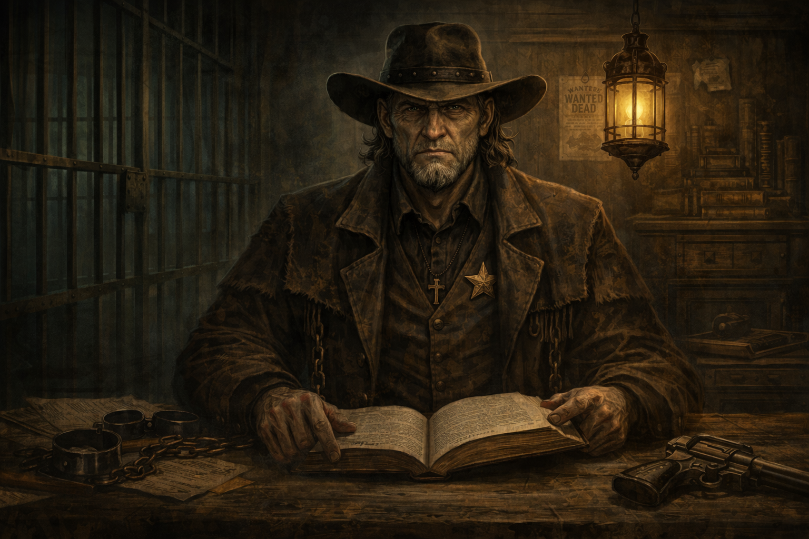

Judge Thaddeus Crowe
Judge Thaddeus Crowe walks the frontier where justice and damnation share the same dusty road. Some say he was once a man. Others claim he is the echo of every oath ever broken beneath a blood-red sky.
As a Curator, Crowe guides Weird West adventures in the Savage World: Deadlands with a steady and unflinching hand. Gunfire, grit, and consequence shape his tales, where every roll matters and every victory carries weight.
He offers no comfort — only truth. And when the last shot fades into silence, Judge Crowe alone decides which stories endure.